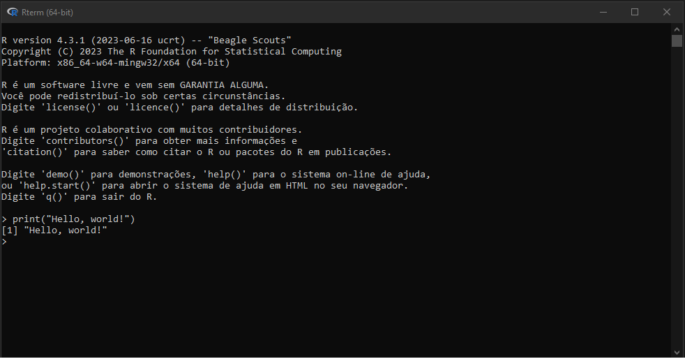

print(1:50) [1] 1 2 3 4 5 6 7 8 9 10 11 12 13 14 15 16 17 18 19 20 21 22 23 24 25
[26] 26 27 28 29 30 31 32 33 34 35 36 37 38 39 40 41 42 43 44 45 46 47 48 49 50https://join.slack.com/t/dcganlisededa-zvp6871/shared_invite/zt-1zux7ihme-ucqJZtO6tyCur_Vu650upw
| Dia | Assunto | Professor |
|---|---|---|
| 11/08/2023 | Introdução à Linguagem R | João Amaral |
| 11/08/2023 | Quarto | João Pacheco |
| 18/08/2023 | Estrutura de dados | João Pacheco |
| 25/08/2023 | Manipulando dados com dplyr | João Amaral |
| 01/09/2023 | Estatística descritiva e tabelas | João Amaral |
| 15/09/2023 | Visualizando dados e modelando | João Pacheco |
| 22/09/2023 | Gráficos avançados usando ggplot2 | João Pacheco |
| Assíncrona | Avaliação 1 | Todos |
O R é a linguagem de programação em si. Foi criado em 1993 por Ross Ihaka e Robert Gentleman na Universidade de Auckland, Nova Zelândia. Eles desenvolveram R como uma implementação alternativa e livre da linguagem S, outra ferramenta importante para análise de dados na época.
Para utilizá-la, vamos primeiro abrir o Rterm, a versão do R em linha de comando.

> é o prompt, solicitando um input
O output é acompanhado de um número [1], que representa a posição daquele item. Isso será mais útil em outputs com vários elementos (veja no código abaixo)
print(1:50) [1] 1 2 3 4 5 6 7 8 9 10 11 12 13 14 15 16 17 18 19 20 21 22 23 24 25
[26] 26 27 28 29 30 31 32 33 34 35 36 37 38 39 40 41 42 43 44 45 46 47 48 49 50No RStudio, um projeto é uma estrutura unificada para organizar códigos, dados e arquivos associados a uma análise específica.
Para criar um novo projeto, basta clicar em “Arquivo” -> ” Novo projeto” e selecionar se deseja criar o projeto em uma nova pasta ou em uma pasta existente.
Quando criamos um projeto, automaticamente a pasta selecionada torna-se o seu Working Directory. Você entenderá por que isso é relevante no decorrer do curso. Por enquanto, lembre sempre de criar um projeto novo quando for trabalhar em uma nova proposta. Agora que criou o seu projeto, vamos aprender um pouco mais de R.
Por ser uma linguagem de programação de alto nível, a sintaxe do R se aproxima da linguagem escrita. Existem diversas formas de se escrever um mesmo bloco de código. Mesmo que muitas dessas formas funcionem, devemos tentar seguir uma forma de escrita que seja clara, concisa e siga algumas regras de estilo.
Para saber mais sobre essas regras, visite: https://style.tidyverse.org/index.html
Tudo no R é um objeto, desde estruturas de dados mais primitivas, como números, até estruturas mais complexas, como funções e data frames. A ideia de objeto em R é um pouco diferente de outras linguagens de programação, mas não se preocupe com isso no momento.
Vamos criar um objeto (variável) do tipo numérico, com nome “x”.
x <- 5O símbolo “<-” designa um valor (à direita) para a variável x (à esquerda). Essa atribuição também pode ser feita com o sinal de “=”, porém não é recomendado.
Para rodar uma linha de código, aperte “ctrl + enter” ou aperte o botão de rodar o código, conforme imagem abaixo:
Você pode agora referenciar diretamente o variável x, que possui valor “5”. Se quiser saber o tipo da variável “x”, basta utilizar a função typeof().
print(x)[1] 5Caso deseje, um novo valor pode ser atribuído à “x”:
x <- "oi"
print(x)[1] "oi"Note que “x” pode receber o valor de uma outra variável:
y <- 10
x <- y
print(x)[1] 10Ou uma operação matemática:
x <- y + 1
print(x)[1] 11No decorrer da disciplina veremos que podemos atribuir qualquer valor para “x”, até mesmo funções.
Sempre que possível, comente o seu código. Comentários são feitos com o símbolo # e o texto em seguida é ignorado pelo R no momento da execução do código. Essa é uma boa prática em qualquer linguagem de programação e pode te ajudar a lembrar o que foi feito em cada linha de código. Acredite, você irá esquecer.
# Imprimindo no console o valor de y
print(y)[1] 10Por último, lembre que no R há diferenciação entre letras maiúsculas e minúsculas.
Essa aba permite a visualização dos objetos já carregados na sessão ativa do R.
Caso deseje remover algum objeto, basta utilizar a função rm(). Para remover todos os objetos carregados, digite no console rm(list = ls()).
rm(x)São símbolos que realizam ações sobre objetos.
| Operador | Descrição |
|---|---|
| + | adição |
| - | subtração |
| * | multiplicação |
| / | divisão |
| ^ ou ** | exponenciação / potenciação |
| Operador | Descrição |
|---|---|
| < | menor que |
| <= | menor ou igual |
| > | maior que |
| >= | maior ou igual |
| == | exatamente igual a |
| != | diferente de |
| !x | não ‘x’ |
| x | y | ‘x’ ou ‘y’ |
| x & y | ‘x’ e ‘y’ |
Sugiro que teste os operadores para criar maior familiaridade.
Permite que um conjunto de instruções seja executado n vezes. O mais utilizado é o “for” loop.
Tem a seguinte estrutura:
for(var in objeto_iteravel) {
# faça algo
}Exemplos de for loop:
# Iterando em um vetor numérico
for(i in 1:10) {
print(i)
}[1] 1
[1] 2
[1] 3
[1] 4
[1] 5
[1] 6
[1] 7
[1] 8
[1] 9
[1] 10# Iterando em um vetor de caracteres
## Criando um vetor
nomes <- c("joao", "mauricio", "joao pedro")
# O loop pode iterar por vetores, listas, etc
for(nome in nomes) {
print(nome)
}[1] "joao"
[1] "mauricio"
[1] "joao pedro"É uma estrutura de controle condicional. Avalia se determinado argumento é verdadeiro e, caso seja, executa a linha de código em seguida. Podemos especificar um comportamento se a condição for falsa com o “else”.
# Estrutura do if
if(condição) {
# faça isso
} else {
# faça essa outra coisa
}Olhe o exemplo abaixo:
x <- 1
if(x == 2) {
print("x tem o valor de 2")
} else {
print("Essa condição é falsa!")
}[1] "Essa condição é falsa!"O “if” também pode ser utilizado dentro de um loop:
# Cria vetor numeros
numeros <- c(1, 2, 3, 4, 5)
# For loop com if
for(numero in numeros) {
# Avalia se a condição é verdadeira
if((numero %% 2) == 0) {
print(paste({numero}, "é par"))
} else {
print(paste({numero}, "é ímpar"))
}
}[1] "1 é ímpar"
[1] "2 é par"
[1] "3 é ímpar"
[1] "4 é par"
[1] "5 é ímpar"São tipos especiais de objetos que realizam ações sobre outros objetos e podem retornar um valor. Muito da funcionalidade do R se dá através da aplicação de funções aos dados. Funções tem a seguinte estrutura: função(argumento). Recomendo ativar a opção de destacar as chamadas de função no Rstudio:
“Tools” -> “Global Options” -> “Code” -> “Highlight function calls”
Exemplo de função utilizada anteriormente no capítulo: print().
Para criar sua própria função:
# Criando função para somar dois valores
somar <- function(x, y) {
return(x + y)
}
somar(1,2)[1] 3Aprenderemos novas funções durante o decorrer do curso, não se preocupe em decorá-las no momento.
Os pacotes são conjuntos de funções, dados e documentações. O software básico do R já vem com alguns pacotes pré-instalados. Para adicionar novos pacotes, é necessário instalá-los.
# A função abaixo instala pacotes
install.packages("psych")
# Para instalar com as dependências
install.packages("psych", dependencies = TRUE)Depois, é importante carregar o pacote para utilizá-lo:
# Carregando o pacote psych
library(psych)Podemos também utilizar funções de um pacote sem carregá-lo, por meio da sintaxe {nome do pacote}::função()
psych::fa()Isso também pode ser útil quando mais de um pacote possuir funções com mesmo nome. Para garantir que a função desejada seja executada, podemos utilizar a técnica descrita acima.
É possível ver os pacotes instalados na aba “packages” do painel de output do Rstudio.
# Pedindo ajuda com uma função
help(mean)
# A mesma função também pode ser utilizada para pacotes
help(psych)
# O help search irá buscar páginas relacionadas ao termo inserido
help.search("linear regression")
# Escrever "?" funciona como help()
?mean
# Escrever "??" funciona como help.search()
??mean
# Caso esteja em dúvida sobre uma função em seu script, pode selecioná-la e apertar a tecla f1
# Teste na função abaixo
mean()
# A função example traz exemplos de uso de uma determinada função
example("mean")Acima estão alguns modos de buscar ajuda no R. Entretanto, na maior parte do tempo, essa ajuda será pelo google. Pode ter certeza que alguém já passou pelo mesmo problema que você. E a resposta estará no google.
As mensagens de erro são feitas para ajudar o programador, não somente pra frustrá-lo. Dedique um momento para interpretar o que a mensagem está comunicando. Mesmo que à primeira vista pareça confusa, ela contém pistas valiosas sobre onde e por que algo deu errado.
# Exemplo de erro
print(x)[1] 1No início, elas aparecerão com maior frequência. Entretanto, a ausência delas não significa que seu código esteja certo. Ele pode estar sintaticamente correto, mas ainda assim produzir resultados inesperados ou incorretos. Não hesite em usar ferramentas como o ChatGPT para decifrar onde estão os erros no seu código, seja criativo.